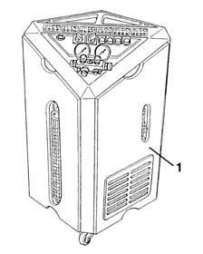

5040A14 air conditioner cooling circuit - check and repair any leaks by tightening fittings
- Path
- Procedures > 50 AUXILIARY UNITS > 5040 AIR CONDITIONING CASING AND COMPONENTS > 5040A air conditioner coolant circuit > 5040A14 air conditioner cooling circuit - check and repair any leaks by tightening fittings
- Kind
- repair procedure (removal / refitting; the operation number is the code)
- Applies to
- all engines; all production periods
- Interactive page
- https://sloeber94.github.io/elrnDB-lYpsln/en/#/2429304
Applies to: all engines; all production periods
Applies to: all engines; all production periods
1. Use the special draining/repressurizing equipment.

Applies to: all engines; all production periods
Introduce a certain amount of R134a coolant fluid (around 200 g) into the system.
Use a leak detector to identify the area where the leak is coming from.
Drain the fluid and eliminate the leak, tightening any slack connectors or replacing any damaged pipes or components.
Repressurize using coolant fluid ( 0010T84 coolant for air conditioning system dehydrate and recharge ).